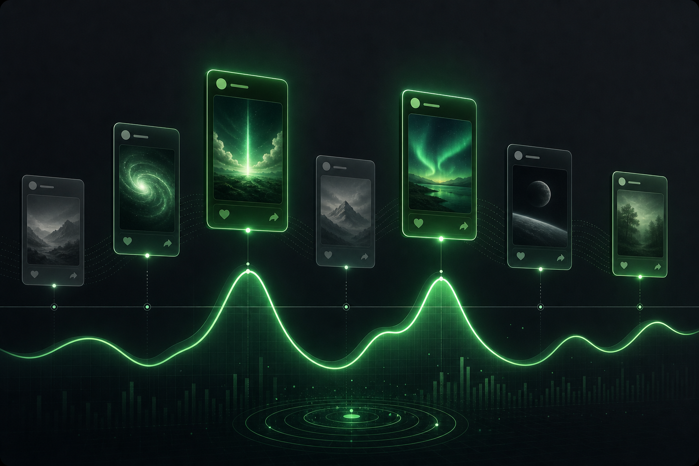

Audience map
Telegram analytics for people who publish
Read channel signals.
Pulsefeed turns reach, posts, and audience movement into clear decisions for channel growth.
Growth signal
rising
Content read
clear
For channel owners
For media teams
For launch operators
For creator studios
A design system built around signal.
Every block answers one question: what changed, why it moved, and what to publish next.
Reach quality
Separate loyal readers from empty spikes.
Live pulse
Catch the post that is pulling the channel forward.
Alerts
Know when growth changes, not after the week ends.
Turn posting into a readable loop.
Pulsefeed frames each post as a signal event: audience fit, timing, retention, and next action.

Collect reach and response signals.
See which posts move readers, which fade, and which deserve a follow-up.
Pick the next move with context.
Compare timing, topic, and audience drift without opening five scattered reports.
Build a stronger publishing rhythm.
Keep the channel learning from every post instead of waiting for monthly hindsight.
Built for decisions, not vanity reports.
The interface favors clean interpretation over endless charts that look busy but say little.
Typical analytics
- Numbers without publishing context
- Late reports after momentum is gone
- Charts that do not explain what changed
- Audience data split across tools
Pulsefeed
- Reach, audience, and content read together
- Fast signals while a post is still moving
- Clear prompts for what to test next
- A single view for channel growth work
Start small. Scale when the channel does.
Simple plans for solo creators, teams, and agencies managing several Telegram channels.
Creator
Free
For one channel and weekly signal checks.
Try CreatorOperator
$19
For daily publishing decisions and growth tracking.
Start OperatorStudio
Custom
For teams managing multiple channels and reports.
Talk to usQuestions before launch.
Short answers for the main things a buyer would ask before trying Pulsefeed.
The concept is focused on Telegram-first analytics. The same signal system can later expand to other channels.
It replaces scattered checks. The page is designed around the decisions a channel owner makes after posting.
Yes. The landing is structured so the visual brand, pricing, and product story can support a real MVP later.
Make the channel readable.
Give every post a signal, every signal a decision, and every decision a next test.
Start free